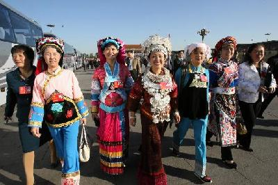
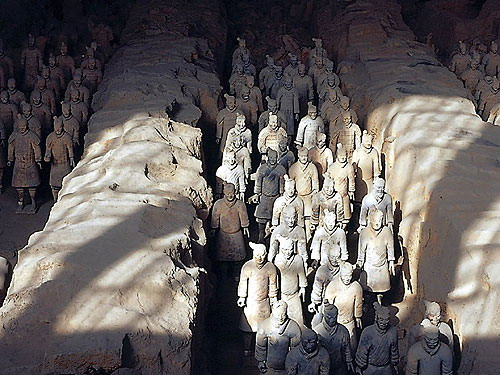
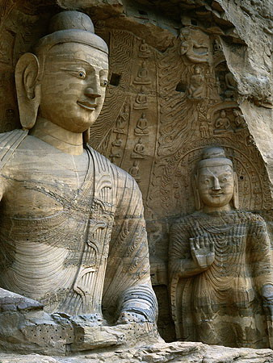

Introduction

The Chinese Communist Party is the ruling party of the People's Republic of China. China possesses a multi-party, consultative system of government that operates under the leadership of the Communist Party.
According to the Chinese Constitution, all citizens eighteen years of age and older have the right to vote and to run for office. The National People's Congress is China's highest state political organ, with the authority to propose and approve legislation. The State Council, also known as the Central People's Government, is the highest state administrative organ.
State affairs are carried out according to administrative divisions. People's Congresses and People's Governments exist at the provincial level (including autonomous regions and municipalities directly under the Central Government), county level (including cities), and village level (including townships).
The People's Court is the state organ of justice. The court system consists of the national-level People's Supreme Court, under which are provincial-level Supreme Courts for each province, autonomous region, and municipality directly under the Central Government, followed by mid-level and local-level People's Courts. The People's Supreme Court is China's highest judicial organ. It is responsible to the National People's Congress and its Standing Committee, and supervises the judicial work of all People's Courts, Military Courts, and other specialized courts at every level. All legal activities are supervised by the state People's Procuratorate.
The People's Procuratorate is the state legal supervisory organ.
In recent years, a trial program of direct election of officials has been instituted at the village and township levels, receiving enthusiastic support from local people and widespread international attention.
Hong Kong and Macao are Special Administrative Regions, with independent elections, legislatures, judiciary, and administrative systems.
Landscape
Everest
Foison
Museum of Qin clay figures

Grottoes
